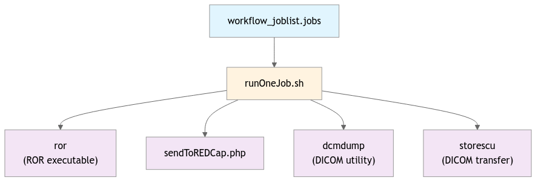

runOneJob.sh
The runOneJob.sh script processes workflow jobs by reading JSON job definitions from a queue file and executing containerized processing tasks using the ROR (Run on Request) system. It validates job parameters, creates working directories, executes Docker containers with specified images, and handles output validation by comparing DICOM StudyInstanceUIDs between input and output folders. Upon successful completion, it sends processed DICOM data to a FIONA storage system and optionally transfers results to REDCap, then removes completed jobs from the queue.
Related Files
Data Flow Diagram
![flowchart TD
A["workflow_joblist.jobs"] --> B["runOneJob.sh"]
B --> C["Docker Container<br>(Processing)"]
D["Input DICOM data<br>(/export/Workflows/PROJECT/ror/)"] --> C
C --> E["Output DICOM data<br>(datajob_*_output/)"]
C --> F["output.json<br>(REDCap data)"]
E --> G["FIONA DICOM Storage"]
F --> H["REDCap Database"]
B --> I["Log files<br>(/tmp/*.log)"]
%% Styling
classDef inputFile fill:#e1f5fe
classDef outputFile fill:#f3e5f5
classDef mainScript fill:#fff3e0
class A,D inputFile
class B,C mainScript
class E,F,G,H,I outputFile](../../_images/mermaid-cfedd27da447110d09a1491ce93af4c2bed391e9.png)
Data Paths
Input Paths:
/var/www/html/applications/Workflows/php/workflow_joblist.jobs/export/Workflows/{PROJECT}/ror//var/www/html/applications/Workflows/php/ror
Output Paths:
/export/Workflows/{PROJECT}/ror/datajob_{JOB_NUMBER}_{IMAGE_NAME}_*/export/Workflows/{PROJECT}/ror/datajob_{JOB_NUMBER}_{IMAGE_NAME}_*_output//tmp/{DIRECTORY_NAME}run.log/home/processing/logs/Workflows_RunOneJob.log
Script docstring starts here —>>> –>> –>>
Run a single job from the workflow_joblist.jobs file. The file contains json code per line.
Need to run as user “processing” with flock.
- Example cron job:
- /usr/bin/flock -n /home/processing/.pids/Workflows_RunOneJob.pid
/var/www/html/applications/Workflows/php/runOneJob.sh >> /home/processing/logs/Workflows_RunOneJob.log 2>&1